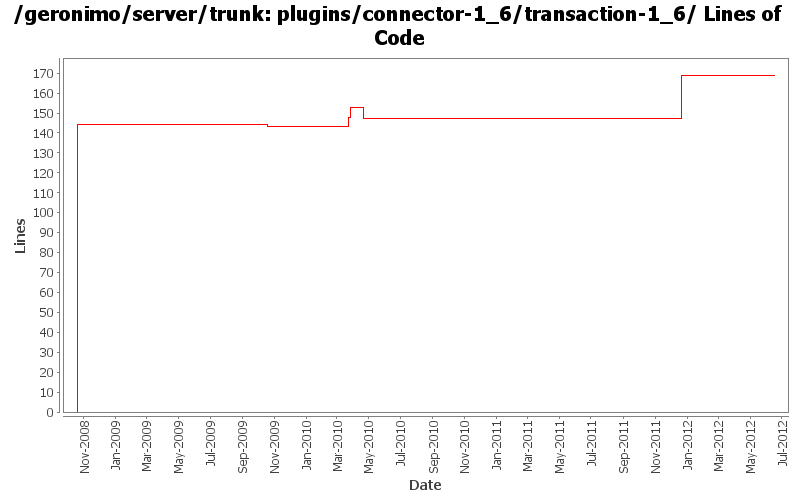

[root]/plugins/connector-1_6/transaction-1_6
 src
(0 files, 0 lines)
src
(0 files, 0 lines)
 main
(0 files, 0 lines)
main
(0 files, 0 lines)
 history
(1 files, 74 lines)
history
(1 files, 74 lines)
 plan
(1 files, 144 lines)
plan
(1 files, 144 lines)

| Author | Changes | Lines of Code | Lines per Change |
|---|---|---|---|
| Totals | 17 (100.0%) | 203 (100.0%) | 11.9 |
| djencks | 9 (52.9%) | 186 (91.6%) | 20.6 |
| gawor | 2 (11.8%) | 10 (4.9%) | 5.0 |
| rickmcguire | 2 (11.8%) | 3 (1.5%) | 1.5 |
| dwoods | 2 (11.8%) | 2 (1.0%) | 1.0 |
| xiaming | 1 (5.9%) | 1 (0.5%) | 1.0 |
| rwonly | 1 (5.9%) | 1 (0.5%) | 1.0 |
Update trunk version to 4.0.0-SNAPSHOT
1 lines of code changed in 1 file:
GERONIMO-6240 Make several base geronimo functions (kernel, deployer, etc) DS services and make the car-maven-plugin take advantage of that. Server assembly doesn't work yet, builds framework.
25 lines of code changed in 1 file:
GERONIMO-6240 various dependency changes such as removing sxc and reducing dependency on blueprint bundles
5 lines of code changed in 1 file:
GERONIMO-5987 use our fork of Aries blueprint 0.3 in ext, with the patch in ARIES 727
1 lines of code changed in 1 file:
[maven-release-plugin] prepare release 3.0-M2
1 lines of code changed in 1 file:
[maven-release-plugin] prepare branch 3.0-M2
2 lines of code changed in 1 file:
GERONIMO-5290 fix many of the deprecation warnings from maven 3
6 lines of code changed in 1 file:
GERONIMO-4680 get class transformers working somewhat in karaf. Make karaf script start geronimo
0 lines of code changed in 1 file:
add blueprint dependency to remove some unresolved dependency errors at build time
5 lines of code changed in 1 file:
GERONIMO-5203: Register JTA services in service registry and install Aries transaction extensions for blueprint
5 lines of code changed in 1 file:
use servicemix howl bundle that I didnt notice before creating one of our uwn, thanks rick
2 lines of code changed in 1 file:
start work on connector_1.6. Builds up through geronimo-connector-builder
1 lines of code changed in 1 file:
move packages to avoid split-packagle problems with tx components
2 lines of code changed in 1 file:
missed updating some jpa10 config and deployer depends
1 lines of code changed in 1 file:
more required updates due to renaming of the connector and transaction artifacts to include -1_6 in r805984
1 lines of code changed in 1 file:
GERONIMO-4655 upgrade version to 3.0-SNAPSHOT, make a few things more consistent
1 lines of code changed in 1 file:
GERONIMO-4360 make copy of connector plugin area for 1.6 spec implementation work. Hopefully the diff part of this change can be reverted when we actually move to 1.6 spec
144 lines of code changed in 1 file: